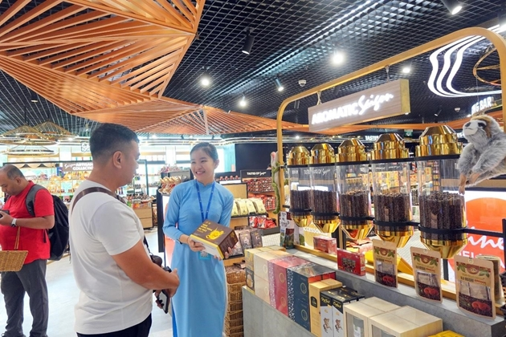
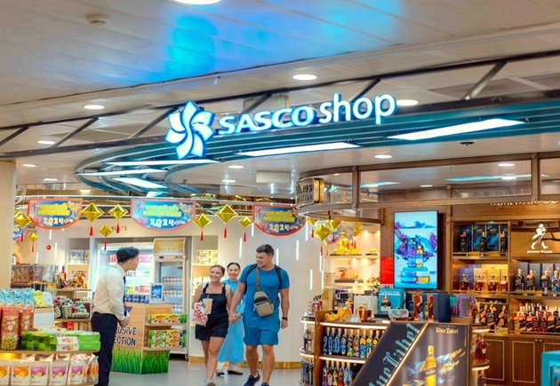

Lần này cũng vậy, tôi nhận được thông báo lùi lịch bay 50 phút vì thời tiết xấu tại Tân Sơn Nhất. Tôi có dịp nán lại sân bay lâu hơn và dạo một vòng các khu vực bên trong khu cách ly. Điểm mạnh của Tân Sơn Nhất là các khu vực nhà hàng, shopping san sát nhau và cũng rất gần cửa lên máy bay. Chỉ cần dạo bộ vài bước chân chứ không phải di chuyển bằng tàu điện như Narita. Không sợ lạc lối, cũng chẳng sợ trễ giờ.
Hấp dẫn từ sự độc đáo và đa dạng
Tôi ngay lập tức bị hút vào một trung tâm mua sắm siêu to, thiết kế hiện đại và cách điệu nổi bật với những nét đẹp văn hóa Việt nam. Từ tiền sảnh gian hàng được tạo hình bởi chiếc xe đạp chở đầy hàng hóa, những chiếc áo dài với họa tiết đặc trưng, trần nhà mang hình dáng chiếc nón rơm khổng lồ;…, tôi cảm thấy những dấu ấn rất đặc trưng Việt Nam, gần gũi nhưng sang trọng và thanh lịch.
Mặt hàng được bày trên kệ thật sự đa dạng, phân khu rất chuyên nghiệp, từ đồ lưu niệm, thủ công mỹ nghệ đến bánh kẹo, đặc sản vùng miền. Các sản phẩm nhập khẩu cũng dễ dàng được tìm thấy tại đây.
Quầy cà phê hấp dẫn du khách từ ánh nhìn đầu tiên bởi cách thức trưng bày độc đáo và đa dạng các loại cà phê từ khắp nơi trên thế giới, trong đó cà phê chồn, cà phê thuần gu mộc, hiện đang được du khách chọn lựa nhiều nhất.
Ở một khu vực trưng bày khác, trà Shan - dòng sản phẩm theo xu hướng tiêu dùng xanh hoàn hảo, thân thiện với sức khỏe con người được hiện diện khá trung tâm; các nhãn hiệu rượu Lady Triệu, rượu Cả Cọp, Thanh Long xương rồng đỏ xuất xứ Việt Nam cũng xuất hiện “chễm chệ” bên cạnh các thương hiệu lừng danh thế giới, từng bước đưa thương hiệu nội địa đặc sắc của Việt Nam đến với du khách quốc tế.
Với mong muốn biến thời gian chờ bay của khách hàng thành hành trình đầy màu sắc, quản lý của một hệ thống cửa hàng bán lẻ lớn tại Tân Sơn Nhất chia sẻ SASCO Shop không chỉ là điểm đến mua sắm mà còn là nơi ghi dấu những kỷ niệm đáng nhớ về sự nhiệt tình của con người và phong cách sống đậm nét Việt Nam.
“SASCO Shop chào đón khách hàng đa dạng, phản ánh sự pha trộn văn hóa của các sân bay quốc tế lớn. Tại đây, du khách Trung Quốc thường chọn những sản phẩm thủ công tinh xảo, trà thảo mộc, trầm hương; Du khách Ấn Độ lựa chọn những sản phẩm thời trang độc đáo, như khăn rằn, khăn thổ cẩm, kính mát…Du khách phương Tây du khách Nhật, Hàn thích nón lá, tranh thêu, trái cây sấy Việt Nam (dừa, sầu riêng, xoài)…vị quản lý này hào hứng.
Sôi động thị trường bán lẻ ngay tại sân bay
Tôi cảm nhận được sự nhộn nhịp tương tự như khi đi qua các trung tâm mua sắm tại Singapore, Thái Lan hay Nhật Bản. Chỉ trong gần một giờ đồng hồ chu du trong SASCO Shop, quan sát hành khách từ nhiều quốc gia như Trung Quốc, Hàn Quốc, Nhật Bản, Ấn Độ, Đài Loan, Hồng Kong, Singapore, Nga, Thái Lan, Malaysia mua sắm rất hào hứng. Tôi ấn tượng với sự am hiểu sản phẩm và chăm sóc khách hàng chu đáo từ đội ngũ nhân viên chuyên nghiệp. Dịch vụ bán hàng được cá nhân hoá với sự tận tâm và ân cần.
Theo quan sát của tôi, tại Tân Sơn Nhất, có không dưới năm đến bảy thương hiệu bán lẻ lớn tạo nên một “tiểu thị trường” rất sôi động giữa lòng sân bay. Điều này thể hiện sự hiện diện ngày càng mạnh mẽ của Việt Nam trong lĩnh vực bán lẻ du lịch toàn cầu, mang đến cho khách hàng một trải nghiệm mua sắm tiện nghi, lựa chọn thỏa thích.
SASCO Shop được định hướng là một trung tâm mua sắm đẳng cấp xứng tầm nhà ga quốc tế. Các sản phẩm trên kệ không chỉ đa dạng mà còn đáp ứng được tiêu chuẩn chất lượng cao, đến từ các nhà cung cấp uy tín trong và ngoài nước. Đây là điểm thu hút khách hàng bởi sự đảm bảo về nguồn gốc và chất lượng của từng sản phẩm.
“Du khách hàng không ngày càng đa dạng và yêu cầu nhiều hơn ở trải nghiệm mua sắm. Chúng tôi luôn nỗ lực mỗi ngày để khách hàng của mình được tận hưởng không gian mua sắm rộng rãi, hiện đại và dịch vụ chuyên nghiệp tiệm cận các tiêu chuẩn quốc tế hàng đầu. Sự hấp dẫn thu hút khách hàng mua sắm còn đến từ các chương ưu đãi diễn ra quanh năm, đặc biệt là trong các mùa cao điểm du lịch”, quản lý này nói thêm.
Sau đại dịch COVID-19, ngành du lịch và hàng không đang khôi phục phong độ. Đặc biệt, các thương hiệu cạnh tranh trong ngành bán lẻ tại các sân bay tạo nên không khí hứng khởi cho việc đầu tư và phát triển các trung tâm mua sắm đẳng cấp, xứng tầm trong khu vực và quốc tế.
Trong bối cảnh Sân bay quốc tế Long Thành đã hiện ra cùng việc mở rộng Nhà ga T3 tại Tân Sơn Nhất, rất đáng để kỳ vọng về đột phá của hàng không Việt Nam, hứa hẹn gia tăng những trải nghiệm đáng nhớ và đong đầy cảm xúc cho mỗi hành trình đến các vùng miền Việt Nam.
Nguồn: Báo Thanh tra - thanhtra.com.vn - Đăng ngày 18/8/2024